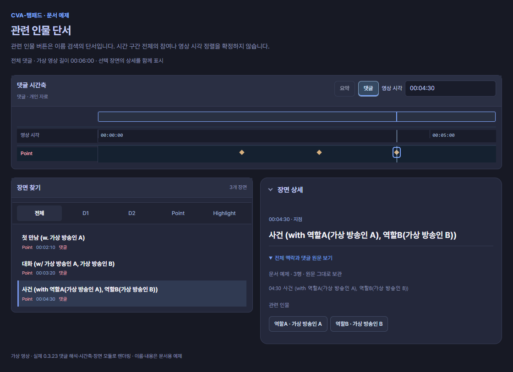
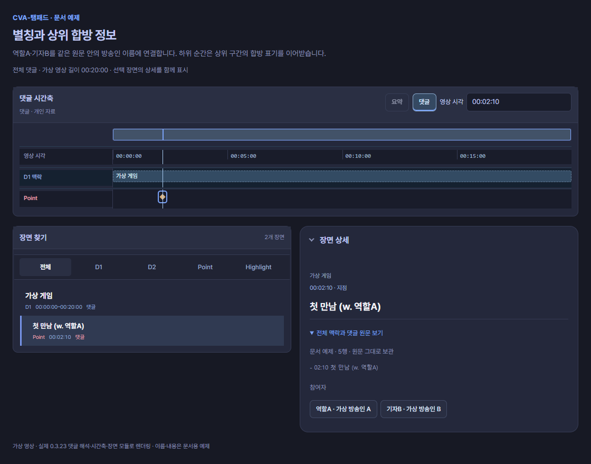

인물과 합방
댓글의 이름으로 방송인을 찾을 수 있습니다. 관련 인물은 w., 구간의 참여자는 합방:으로 적습니다. 기존 댓글을 다시 쓸 필요는 없습니다.
관련 인물 단서
02:10 첫 만남 (w. 가상 방송인 A)
03:20 대화 (w/ 가상 방송인 A, 가상 방송인 B)
04:30 사건 (with 역할A(가상 방송인 A), 역할B(가상 방송인 B))
화면에서 읽기: 세 시각은 각각 Point입니다. 인물 이름은 참가자 후보로 남고, 역할A·역할B와 실제 이름의 대응을 함께 확인할 수 있습니다. 이것만으로 합방 구간 막대·영상 연결·시각 정렬을 만들지는 않습니다.
w., w/, with는 대소문자를 구분하지 않습니다. 닫힌 괄호 뒤의 설명도 원문에 남깁니다. 명시 with 괄호를 우선하며, with가 없는 마지막 명단 괄호는 두 명 이상일 때 검색 단서로 읽습니다. 쉼표는 가장 바깥 수준에서만 이름을 나눕니다. 역할A(가상 방송인 A)는 역할A를 화면 표기로, 가상 방송인 A를 검색어로 사용합니다. 여러 이름이 들어 있는 내부 괄호는 한 사람의 가명으로 확정하지 않습니다.
이 표기는 관련 인물 후보입니다. 도구가 장면 안에서 이름을 보여줄 수 있지만 그 사람이 구간 전체에 참여했다는 뜻은 아닙니다. 합방:, 함께:, 참여:로 명시한 참여자 목록과 구별합니다. 명시 목록은 기존 제목 부모 상속 규칙을 따릅니다.
한 원문 안에서 가명을 연결하기
별칭: 역할A = 가상 방송인 A
별칭: 기자B = 가상 방송인 B
# 00:00 ~ 20:00 가상 게임
합방: 역할A, 기자B
- 02:10 첫 만남 (w. 역할A)
화면에서 읽기: D1의 명시 합방 명단은 가상 방송인 A·B로 연결되고, 하위 Point에도 같은 명단이 이어집니다. 상세의 부모 맥락과 참여자 이름을 함께 확인하세요. Point의 w. 역할A는 가상 방송인 A라는 후보 단서입니다. 부모의 명시 명단 상속과 Point의 후보 이름은 서로 다른 정보입니다.
별칭: 행은 시간을 만들지 않습니다. 별칭은 같은 원문 문서에만 적용합니다. 같은 작성자의 답글을 이어 읽어도 다른 답글에서 선언한 별칭으로 앞 원문의 이름을 바꾸지 않습니다. 부모의 명시 명단을 상속할 때에는 명단을 선언한 원문의 별칭을 사용합니다.
같은 원문에서 한 별칭이 서로 다른 방송인에게 연결되면 충돌입니다. 첫 번째 이름을 선택하거나 자동 조회하지 않습니다. 원문을 보존하고 작성자 또는 사용자가 연결을 수정해야 합니다. 같은 시각·같은 이름의 원문 행도 삭제하지 않습니다.
파일로 별칭을 가져올 수도 있습니다. 파일 예제 보기
다른 시점의 영상 확인하기
댓글을 고치지 않고 이름을 추가하려면 한 줄 입력·참가자 파일을 사용하세요.
이름이 모호하면 방송인을 직접 선택합니다. 기준 영상과 방송 시각이 겹치는 다시보기를 찾고, 여러 영상으로 나뉘었다면 해당 다시보기를 고를 수 있습니다. 같은 장면이 어긋나면 시각 보정으로 맞추세요.
명시 합방 명단
합방: 가상A, 가상B는 직전 제목 또는 끝이 있는 합방 범위에 붙는 명시 명단입니다. 자식은 가장 가까운 부모의 명단을 이어받고, 새 독립 주제나 목록은 앞 명단을 이어받지 않습니다. 없음은 명시적으로 참여자가 없다는 뜻, 미확인은 모른다는 뜻이며 누락과 구별합니다. 중복·충돌은 확인 안내를 남깁니다.